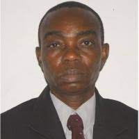
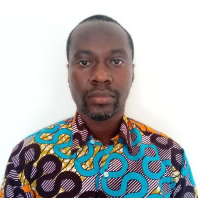

Mark Atta Mensah
Mark Atta Mensah is a Ghanaian lecturer, researcher,
trainer, and with expertise in a variety of fields,
including information technology, and education.
He is currently a lecturer at the University of Ghana and has published
numerous r and journals.
Mensah is also a trainer and consultant, providing training and consultancy
services to organizations in Ghana and beyond. He is passionate about using technology
to improve healthcare and education in Africa.
Michael Agbo Tettey
A critical thinker and solutions engineer with
over a decade experience in software engineering
and algorithm design. With a strong mathematical base,
solving complex problems with mathematics is simply another
opportunity to exhibit the beauty and elegance of mathematics
Ferdinand Apietu Katsriku
Education:
PhD.(London), PGCE, QTS, (London), MSc. (Scotland) MEng.(Distinction) (former USSR), Dip. Ed. (Russian Language) (former USSR)
Areas of interest:
My current research focus is number of wireless systems will bring in its wake a number of problems including spectral congestion and the need to employ better and sophisticated frequency planning techniques. Cognitive radio has emerged as preferred way of building intelligent radio systems that are capable of interacting with their environment and making real time decisions.
Joseph Annan
Over 20 years’ practical experience in software and application development. (Strong experience in Database Principles, Development and Implementation (Oracle and MS Access), Visual Programming, Information and Knowledge Systems and System Lifecycle Development using UML Tools)

Ebenezer Owusu
Specialties: Pattern Recognition, Image Processing, Computer Vision
Winfred Yaokumah
Winfred Yaokumah is a researcher, cyber security expert and senior faculty at the Department of Computer Science of the University of Ghana. His work appears in several local and international reputable journals. He is an editor of the Modern Theories and Practices for Cyber Ethics and Security Compliance. He also serves on an International Review Board for the International Journal of Technology Diffusion.
Justice Kwame Appati
Justice Kwame Appati is a Ghanaian computer scientist and academic with expertise in artificial intelligence, machine learning, and data mining. He is currently a Senior Lecturer in the Department of Computer Science at the University of Ghana, where he has been a faculty member since 2014.
Prof Isaac Wiafe
Tools for designing persuasive technologies are becoming increasingly available with the "explosion in innovation" in areas of social networking, ubiquitous computing and ambient intelligence. Yet most of the current persuasive technologies available either do not make explicit the theoretical foundation upon which they are developed or do not have one at all [Torning and Oinas-Kukkonen 2009].

Benjamin Saphour-Kantanka Wiredu
David Malan is a lecturer at the Harvard University Department of Computer Science. His interests include programming languages, computer security, and software engineering. He has written several books, including "Mastering Python" and "The Secret Language of Computers."
Prince Boakye-Sekyerehene
I'm driven by a passion for innovation, education, and personal development. With a track record of turning ideas into successful outcomes, I bring a unique blend of skills to the table. Actively contributing to academia through research and mentorship, I bridge the gap between theory and practice. As a committed advocatee for growth, I guide individuals to unlock their potential and cultivate a mindset of continuous development.